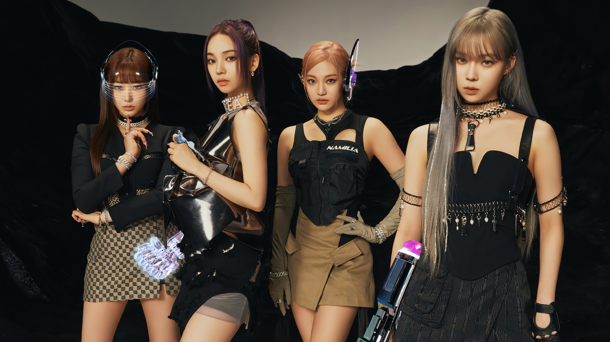
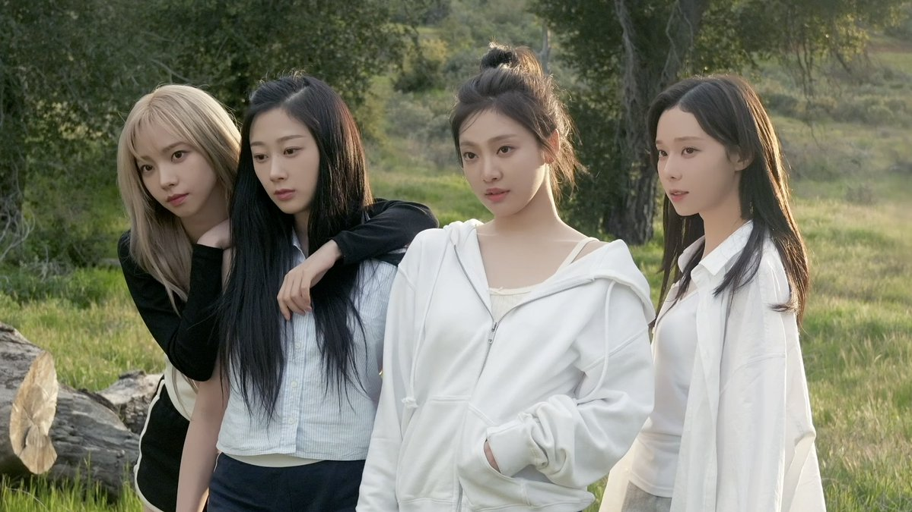
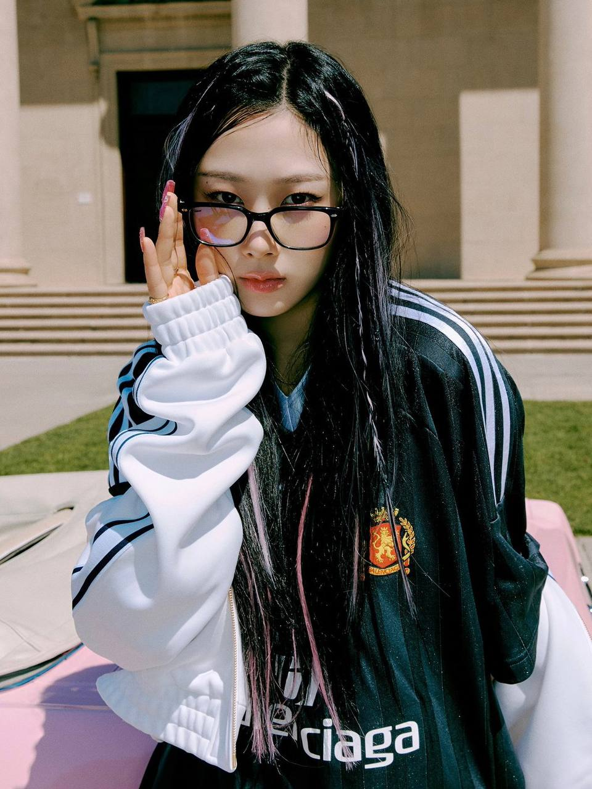
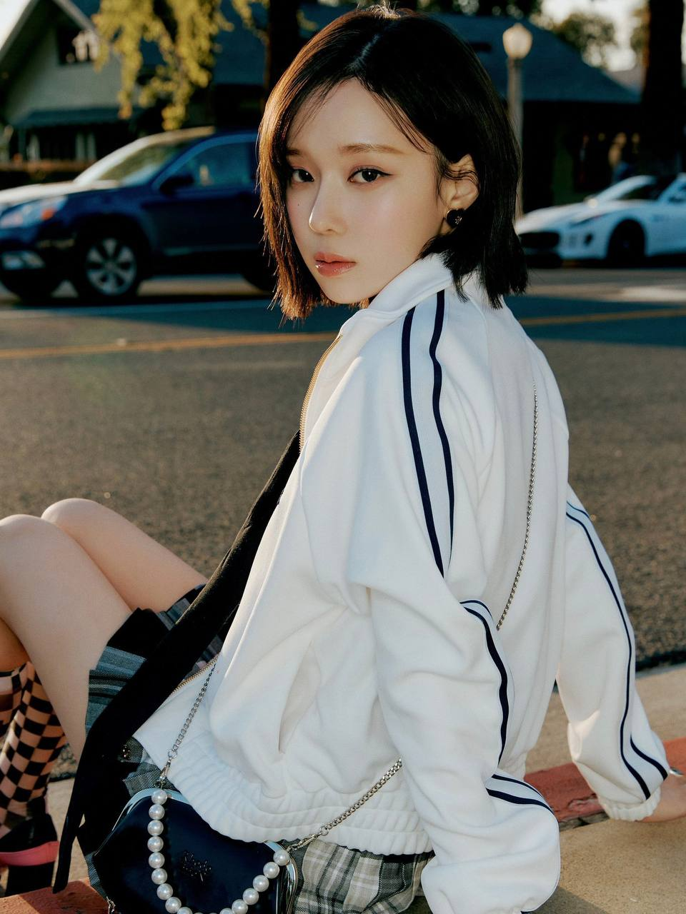
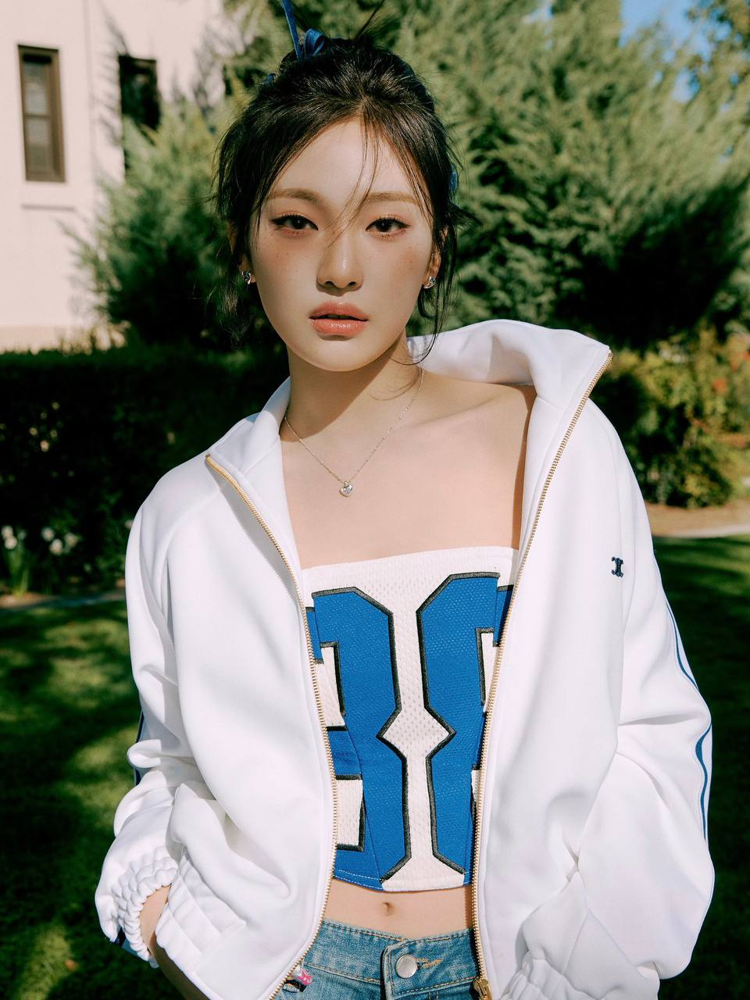

aespa (에스파) adalah girl group generasi ke-4 dari Korea Selatan yang debut di bawah naungan SM Entertainment pada tahun 2020. Grup ini debut dengan konsep AI
(Artificial Intelligence) dan futuristik yang baru-baru ini menjadi tren di industri Kpop. Girl group ini terdiri dari empat anggota yaitu Karina, Giselle, Winter, dan Ningning.
Mereka melakukan debut pada 17 November 2020 dengan single berjudul "Black Mamba". Uniknya, setiap anggota memiliki avatar masing-masing, lho!.
Melalui proyek inovatif SMCU (SM Culture Universe) aespa debut mengadopsi koneksi tanpa batas antara dunia nyata dan dunia virtual. Jadi di masa depan, para penggemar memiliki
pengalaman unik dengan mengidolakan idol manusia dan idol versi virtual mereka.
Lee Soo Man, founder dari SM Entertainment, menjelaskan tentang aespa di 2020 World Culture Industry Forum.
Tak kalah dengan seniornya, aespa ini pun punya konsep yang unik dan belum pernah ada sebelumnya.
"Seperti yang kalian lihat aespa punya member artis yang ada di dunia nyata. Dan ada member berupa avatar yang berada di dunia virtual.
Ceritanya tentang bagaimana mereka berinteraksi dan berkomunikasi melalu dunia digital, dalam sebuah tempat antara nyata dan virtual. Member yang sebenarnya di dunia nyata dengan avatar di virtual,
bersama dengan makhluk yang penuh teka-teki di dunia virtual yang akan saling mendukung dan berperan sebagai asisten terpercaya, bisa tampil di dunia nyata dengan member asli," kata Lee Soo Man.
Mari simak profil lengkap aespa beserta biodata 4 anggotanya di bawah ini.
Profil aespa

Grup ini terdiri atas empat anggota, yaitu Karina, Giselle, Winter, dan Ningning. Menariknya, setiap anggota memiliki pasangan virtual yang ada di dimensi lain,
dalam SMCU dikenal sebagai FLAT, ada æ-Karina, æ-Winter, æ-Giselle, dan æ-NingNing.
Mereka disebut sebagai “æs”, diucapkan seperti kata eyes. Para “æs” ini adalah avatar online aespa.
Nama aespa sendiri memiliki arti campuran antara “Avatar” dan “Experience”. Setelah menjalani hari-hari trainee,
para anggota akhirnya debut pada 17 November 2020 dengan merilis single pertama berjudul “Black Mamba”.
Melalui single ini, aespa berhasil menempati posisi pertama di QQ Music selama kurang lebih 3 minggu.
Nama fandom resmi aespa adalah MY, yang berarti "My Precious Friend".
1. Karina
Yoo Jimin (유 지민) atau lebih dikenal dengan nama panggung Karina, adalah leader aespa dan memegang posisi main dancer, lead rapper, dan center.
Karina menjadi anggota tertinggi di grup dengan tinggi 167,8 cm. Sebelum debut, Karina merupakan seorang ulzzang terkenal. Ia menjadi trainee selama 4 tahun.
- Nama panggilan: Karomi
- Tanggal lahir: 11 April 2000
- Tempat lahir: Seongnam, Korea Selatan
- Zodiak: Aries
- Berat badan: 45 kg
- Golongan Darah: B
- Agama: Katolik
- Pendidikan: SMA Hansol
- Hobi: Bermain mobile game
2. Giselle

Uchinaga Aeri (うちながえり), lebih dikenal sebagai Giselle adalah main rapper aespa. Ia keturunan Jepang dari ayahnya dan Korea dari ibunya. Fasih berbahasa Korea, Jepang, dan Inggris. Sebelum bergabung dengan SM Entertainment, ia bergabung dengan AJS, akademi pelatihan idola.
Giselle menjadi trainee SM hanya selama 10 bulan, menjadikannya sebagai idola wanita dengan masa pelatihan terpendek dari semua idola SM pada saat debutnya.
- Nama panggilan: Giselle, Riri
- Tanggal lahir: 30 Oktober 2000
- Tempat lahir: Garosu-gil, Korea Selatan
- Zodiak: Scorpio
- Posisi: Subvocalist, rapper utama
- Tinggi: 166 cm
- Berat: -
- Golongan Darah: O
- Pendidikan : St Mary International School
- Hobi: Makan manis dan belanja
3. Winter

Kim Minjeong (김민정), lebih dikenal dengan nama panggung Winter. Ia berlatih selama 3 tahun sebelum memulai debutnya dengan aespa.
Ia adalah anggota pertama yang diperkenalkan SM Entertainment sebagai member aespa. Salah satu fakta menariknya, Winter pernah masuk dalam nominasi 100 Most Beautiful Faces tahun 2020.
- Nama panggilan: Mindungie, Baby Rabbit, Gyeoullie
- Tanggal lahir: 1 Januari 2001
- Tempat lahir: Yangsan, Korea Selatan
- Zodiak: Capricorn
- Posisi: Lead dancer, lead vocalist, visual
- Tinggi: 163 cm
- Berat: -
- Golongan darah: A
- Pendidikan: Yangsan Samsung Middle School
- Hobi: Makan
4. Ningning

Ning Yizhuo (宁艺卓), lebih dikenal sebagai Ninging adalah anggota termuda atau maknae aespa. Ia adalah satu-satunya member aespa yang berasal dari SM Rookies.
Sebelum debutnya, ia termasuk salah satu kontestan dalam kompetisi China “Let's Sing Kids” bersama dengan Chenle NCT.
- Nama panggilan: Ningningie, Kitten
- Tanggal lahir: 23 Oktober 2002
- Tempat lahir: Harbin, Cina
- Zodiak: Scorpio
- Kebangsaan: Tionghoa
- Posisi: Maknae, main vocalist
- Tinggi: 162 cm
- Berat: 43 kg
- Golongan darah: A
- Pendidikan: Harbin Normal University Affiliated High School
- Hobi: Memasak
5 Fakta Menarik aespa
1. Berhasil Mengukir Sejarah
aespa hadir sebagai Global Ambassador Chopard dalam Festival Film Cannes yang akan berlangsung pada 16-27 Mei 2023.
Brand perhiasan mewah dari Swiss ini telah menjadi partner Festival Film Cannes sejak 1997.
Selain itu, AESPA berhasil mengukir sejarah sebagai grup K-Pop pertama yang tampil dalam festival musik Governor's Balls Music Festival di New York dan Outside Lands 2023 di San Fransisco.
2. Berhasil Memecahkan Rekor
aespa berhasil memecahkan rekor dengan lagu pertama, bertajuk Black Mamba yang mendapatkan viewers sebanyak 21,4 juta dalam 24 jam.
Kemudian mendapatkan penghargaan pertama di SBS Inkigayo pada 17 Januari 2021. Selain itu, sejak 15 hari perilisan, mini album Savage milik AESPA berhasil terjual 513.292 kopi dan mendapatkan tempat ke-20 dalam Billboard 200.
3. Member aespa Tak Jadi Duta Brand Mewah Secara Individu
Dikutip dari allkpop.com, SM Entertainment menjelaskan tentang alasan mengapa member aespa tak jadi duta brand mewah secara individu.
SM Entertainment memiliki prinsip dengan membatasi aktivitas individu saar berpromosi dalam grup. Pihaknya juga mengatakan bahwa dari masing-masing anggota atau member pernah mengatakan jika mereka lebih suka dipilih sebagai duta grup daripada duta secara individu.
4. Giselle Memiliki 3 Kebiasaan yang Harus Dilakukannya sebelum Tidur
Melansir koreaboo.com, salah satu member cantik aespa ini memiliki kebiasaan unik. Kebiasaan ini selalu dia lakukan sebelum ia tidur.
Giselle melakukan 3 hal penting menurutnya yang wajib ia lakukan. Sebelum tidur, Giselle harus minum vitamin, menonton Netflix, dan mendengarkan musik.
Hal ini membuatnya merasa nyaman dengan tenang.
5. Makanan Favorit Member aespa adalah Jokbal
Member aespa ternyata memiliki makanan favorit yang tak banyak diketahui penggemarnya. Para member aespa ini ternyata sangat suka dengan Jokbal.
Menurut mereka Jokbal memiliki cita rasa yang sangat nikmat. Jokbal ini merupakan makanan yang ada di Korea yaitu terbuat dari kaki babi.